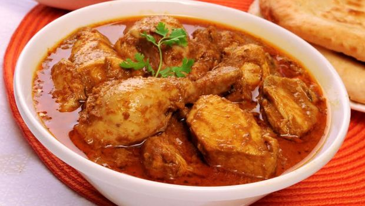

Home
NaatuKodi Pulusu Recipe

Description
Natukodi Pulusu is a traditional South Indian country chicken curry deeply rooted in Andhra cuisine, known for its bold, rustic flavors and nourishing heat. Made with native (free-range) chicken, this dish is simmered in a spicy and tangy tamarind-based gravy that’s infused with aromatic spices, curry leaves, and slow-cooked onions and tomatoes. The meat, being firmer and more flavorful than regular broiler chicken, absorbs the masalas beautifully during the long simmer, resulting in a richly layered curry that’s both comforting and hearty.
The cooking process begins with tempering mustard seeds, cumin, and red chilies in sesame or peanut oil, followed by sautéing onions, green chilies, and ginger-garlic paste until golden. Tomatoes and ground spices are added to create a thick masala base. The country chicken is then added and simmered with water and tamarind extract until tender. Finished with garam masala and fresh coriander, this pulusu is typically served with hot rice or traditional staples like ragi mudda, offering a taste that’s as nostalgic as it is satisfying.
Ingredients
For the curry
- 500g country chicken (natukodi), cut into medium pieces
- 2 tbsp oil (preferably sesame or peanut oil)
- 1 tsp mustard seeds
- 1 tsp cumin seeds
- 2 dry red chilies
- 1 sprig curry leaves
- 2 medium onions, finely chopped
- 2 green chilies, slit
- 1 tbsp ginger-garlic paste
- 2 medium tomatoes, chopped
- ½ tsp turmeric powder
- 1½ tsp red chili powder (adjust to taste)
- 1 tsp coriander powder
- ½ tsp garam masala
- Salt to taste
- Fresh coriander leaves for garnish
- 3 cups water (adjust for consistency)
Optional(For tanginess)
- 1 small lemon-sized tamarind soaked in warm water, juice extracted
- OR 2 medium tomatoes extra (if not using tamarind)
Steps
- Wash the country chicken thoroughly and set aside. Since natukodi takes longer to cook, marinate it lightly with turmeric and salt if desired.
- In a large kadai or pressure cooker, heat oil. Add mustard seeds, cumin seeds, dry red chilies, and curry leaves. Let them splutter.
- Add chopped onions and green chilies. Sauté until onions turn golden. Add ginger-garlic paste and fry until the raw smell disappears.
- Add chopped tomatoes, turmeric, red chili powder, coriander powder, and salt. Cook until the tomatoes soften and oil begins to separate.
- Add country chicken pieces. Mix well to coat with the masala. Cook on medium-high heat for 5–6 minutes until the chicken firms up.
- Add about 3 cups of water and bring to a boil. If using tamarind extract, add it now. Cover and pressure cook for 3–4 whistles or simmer in a closed pot until chicken is tender (may take 40–60 mins for natukodi).
- Once cooked, simmer uncovered if needed to adjust consistency. Add garam masala and cook for another 5 minutes. Garnish with fresh coriander leaves.
- Serve hot with steamed rice, ragi mudda, or jowar roti. The curry tastes even better the next day as the flavors intensify.